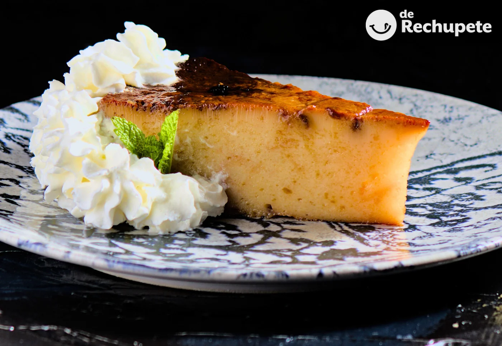

-
Menú diario
Primeros
Arroz con bogavante
Pasta alla puttanesca
Ensalada césar
Gazpacho

Patatas a la riojana

Segundos
Cachopo clásico de jamón serrano y queso
Costillas asadas a baja temperatura
Popietas de lenguado rellenas de marisco

Carcamusa durok con patatas fritas
Pollo asado en su jugo
Postre
Milhoja
Mouse de chocolate blanco
Pan de calatrava
Arroz con leche

Tarta de queso